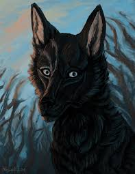

The Black Jackal
Jackals are very dangerous, they can even kill humans especially children.
So, people started to kill the Jackals in most parts of the world. A black jackal
wanted to take revenge on the human race. So, it started to help the virus spreading organisms.
The Black Jackal got the superpower of vanishing and can travel in seconds all over the world
to transport the virus spreading organisms. Below are the list to give directions to the lair of Black Jackal.
-
It is very diffcult to find the Lair of Black Jackal and it is very dangerous to reach.
-
First we need to fly to South Africa.
-
Then we need to reach the kalahari desert, which is a place with red sand and no water
-
We can find hundreds of jackals in wet places of kalahari desert, all these jackals will be gaurding the black jackal.
-
We need to defeat all these hundred jackals to reach the black jackal.

Click here to navigate to previous page